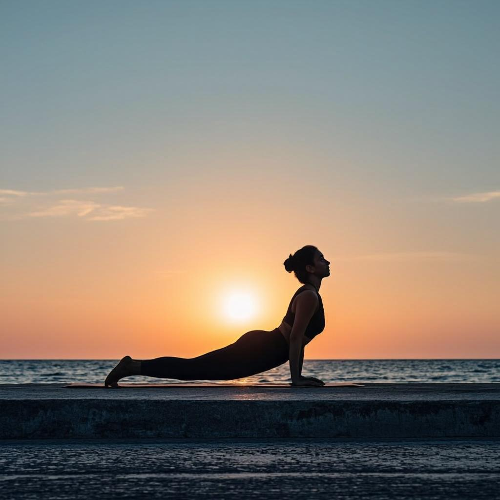
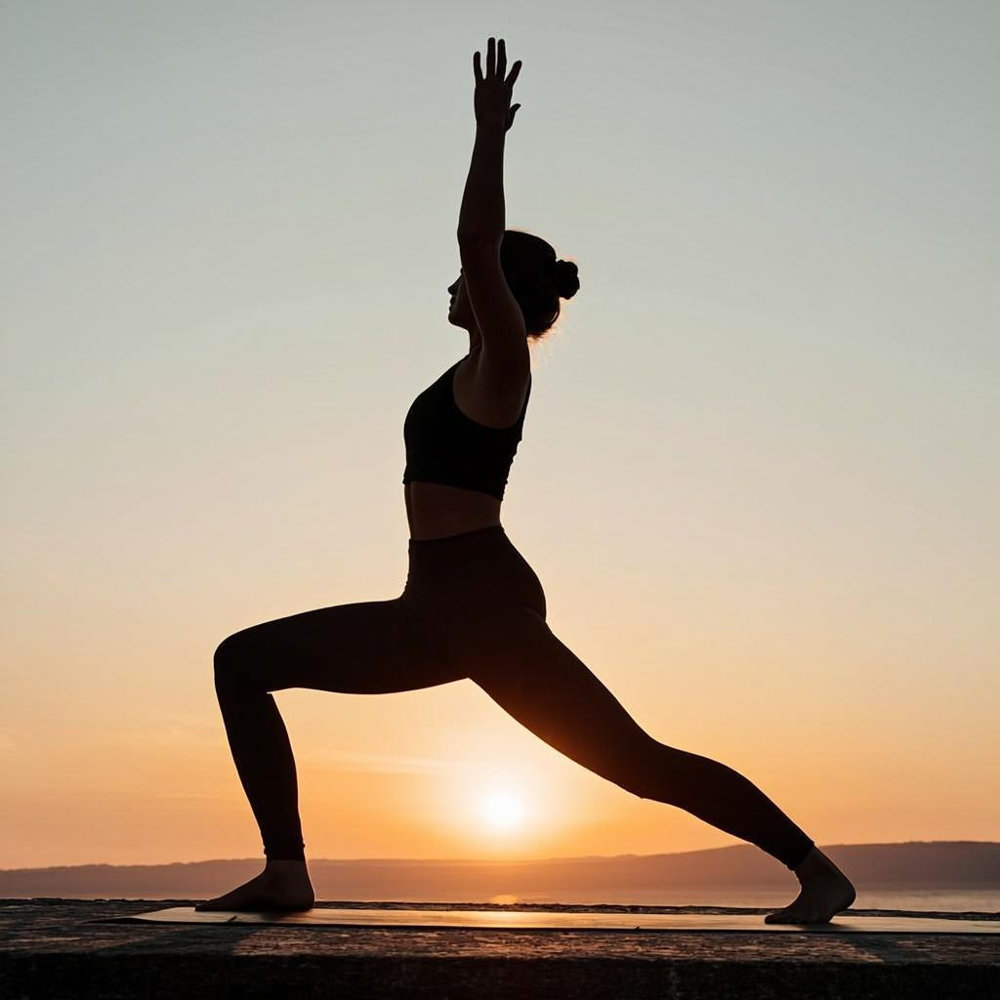
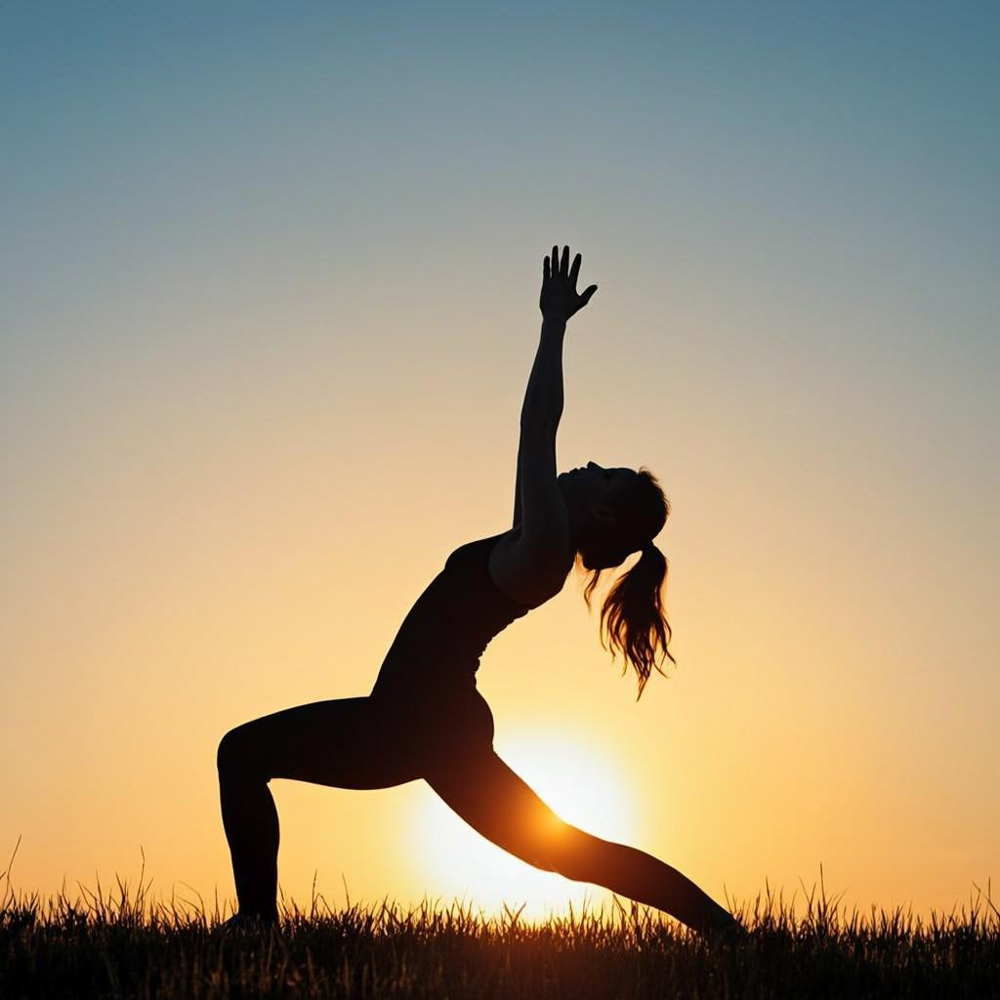
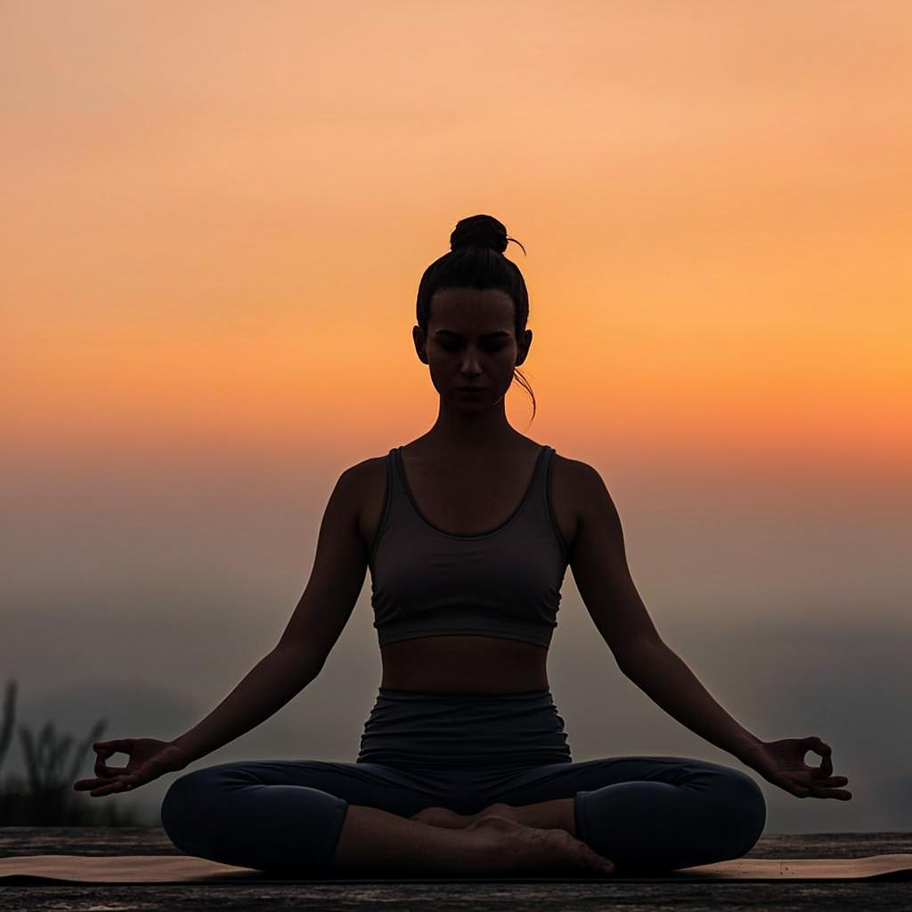
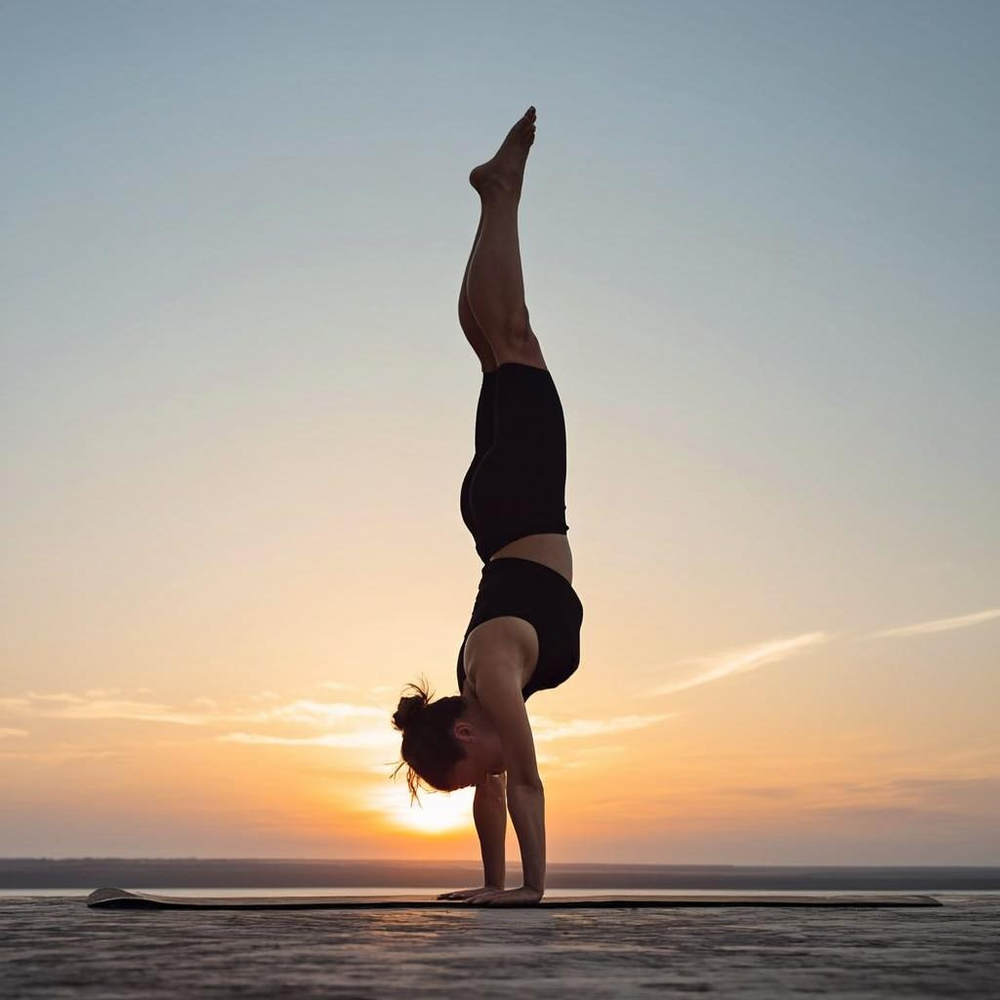
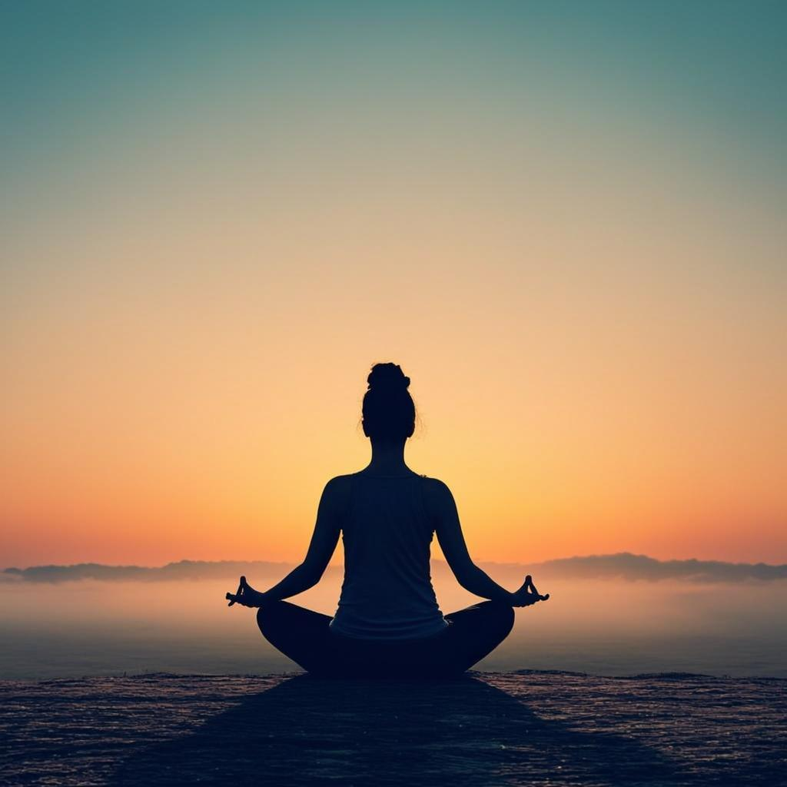

拜日式 A
Sūrya Namaskāra A · 9 vinyāsa每遍 9 个计数，做 5 遍热身。吸气展臂，呼气前屈——像给身体念一遍开场白。

山式 Samasthitiḥ
双脚并拢站直，脊柱拉长，目视鼻尖。
展臂式 Urdhva Vṛkṣāsana
吸气，双臂上举，掌心相对，眼看拇指。
站立前屈 Uttānāsana
呼气，从髋部对折，双手扶地或抱小腿。
半前屈 Ārdha Uttānāsana
吸气，抬头延展脊柱，指尖点地或扶小腿。
四柱式 Caturaṅga Daṇḍāsana
呼气，后跳或迈步到平板，屈肘下降。
上犬式 Ūrdhva Mukha Śvānāsana
吸气，脚背压地，胸口前推，手臂伸直。
下犬式 Adho Mukha Śvānāsana
呼气，臀部向后向上，保持 5 个呼吸。
半前屈 Ārdha Uttānāsana
吸气，走跳回双手之间，抬头延展。
山式 Samasthitiḥ
呼气，前屈；吸气起身合掌，回到山式。
拜日式 B
Sūrya Namaskāra B · 17 vinyāsa在 A 的骨架上加入幻椅与战士一。腿部开始说话，心率也跟着上来。做 5 遍。

幻椅式 Utkatāsana
吸气，屈膝下沉，双臂上举，眼看拇指。
前屈 → 四柱 Uttānāsana → Caturaṅga
呼气前屈；吸气半前屈；呼气四柱。
战士一（右） Vīrabhadrāsana I
吸气，右腿后撤上举，前腿屈膝，保持 5 呼吸。
战士一（左） Vīrabhadrāsana I
呼气四柱过渡；吸气换侧，左腿后撤上举。
下犬式 Adho Mukha Śvānāsana
呼气后撤，双脚踩地，保持 5 个呼吸。
幻椅 → 山式 Utkatāsana → Samasthitiḥ
吸气走跳回前屈，呼气沉；吸气起身回山式。
站姿序列
Standing Postures · 每侧 5 呼吸站姿是根基课。脚压得越实，身体越敢打开。

站立腿上举 Padāṅguṣṭhāsana
单腿站立，手抓大脚趾前屈；再侧向展开。
三角式 Utthita Trikoṇāsana
双脚三倍肩宽，前脚外转，侧向下探。
侧角式 Utthita Pārśvakoṇāsana
前膝屈 90°，腋下压膝盖，后手过头延展。
双角式 Prasārita Padottānāsana
双脚远宽于肩，四个手位依次前屈。
加强侧伸展 Pārśvottānāsana
双手背后合掌（或抱肘），前屈贴前腿。
站立手抓脚 Utthita Hasta Pādāṅguṣṭhāsana
手抓大脚趾把腿抬起来，向前、向侧展开。
坐姿序列
Seated Postures · 从前屈开始坐姿是初级序列的主体。前屈收敛，后弯打开，扭转 wring 出疲惫。

双腿背伸展 Paścimottānāsana
双腿伸直，抓住脚，前屈贴腿，5 呼吸×3 次。
后仰支架 Pūrvottānāsana
手在臀后方，脚跟压地，身体抬成一条线。
半莲花前屈 Ardha Baddha Padma Paścimottānāsana
一腿半盘，同侧手背后抓脚趾，前屈。
头碰膝 Jānu Śīrṣāsana A
一腿伸直一脚内收，前屈抱脚，扭转胸口。
圣哲玛里奇 A Marīcyāsana A
屈膝抱小腿，双手背后相扣前屈。
圣哲玛里奇 C Marīcyāsana C
屈膝脚跨过对侧腿，反向扭转，扣手加深。
船式 Nāvāsana
双腿上举 45°，双臂平行前伸，核心收紧。
结束序列
Finishing Postures · 倒转与安静练习的后半段是给神经系统做一次复位。倒转、卷曲、然后彻底安静。

轮式 Ūrdhva Dhanurāsana
双手推地抬起身体成拱形，做 3 次，各 5 呼吸。
肩倒立 Sarvāṅgāsana
双腿上举垂直地面，双手扶背，收下颌。
犁式 Halāsana
双脚落到头顶后方地面，腿伸直，收下颌。
耳压膝 Karṇapīdāsana
犁式基础上屈膝，膝盖轻轻压向耳朵。
挺尸式 Śavāsana
平躺，手心朝上，跟着呼吸，1~3 分钟。
练习节奏
Cadence · 一周三练也可以开始传统是一周六练、满月新月休息。但从一周三次开始，坚持下来，就是你的节奏。
示例：周一二练、周三歇；周四五练、周末自由。绿色的日子交给垫子，橙色的日子交给生活。
喉部轻收，让呼吸带一点海浪声。用耳朵监控自己的节奏。
会阴轻提（Mūla），下腹内收（Uḍḍīyāna），核心从里面亮起来。
鼻尖、拇指、肚脐……目光落在哪里，心就落在哪里。
